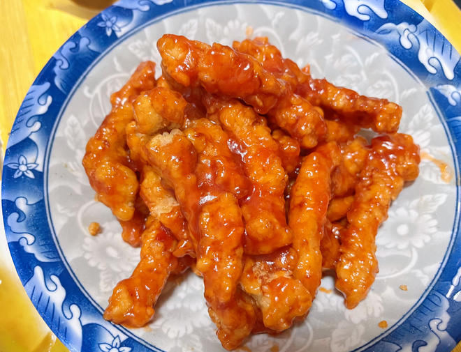

糖醋里脊

介绍
糖醋里脊是中国经典传统名菜之一，该菜品以猪里脊肉为主材，配以面粉、淀粉、醋、番茄酱等佐料，酸甜可口，让人食欲大开；该菜品在湘菜、陕菜、豫菜、浙菜、鲁菜、川菜、淮扬菜、粤菜、闽菜里均有此菜。
食材原料
- 里脊肉 500g
- 葱少许
- 糖适量
- 淀粉适量
- 熟白芝麻少许
- 盐适量
- 鸡蛋 1 个
- 白胡椒粉适量
- 白醋适量
- 番茄酱适量
- 料酒适量
- 生姜适量
制作步骤
- 500g 里脊肉用刀背拍松，切成条状，加 1 勺料酒、半勺盐、少许白胡椒粉和 1 个鸡蛋。
- 抓匀，盖上保鲜膜，腌制 20 分钟。
- 腌制好的里脊肉裹上适量淀粉，并拍去多余淀粉。
- 起锅热油烧至六分热（160 度左右），放入裹好粉的里脊肉，中小火炸至熟透时捞出；待油锅烧至九分热（190 度左右），复炸第二次，大火炸至表面金黄酥脆，捞出备用。
- 锅中留少量底油，放入适量番茄酱中火炒匀，加少许白醋、半勺盐和 1 勺糖，加少许水，再倒入一小碗水淀粉（水：淀粉 = 1 : 1），转大火勾芡收汁。
- 下炸好的里脊肉翻炒，均匀裹上茄汁后，关火盛出。撒上少许熟白芝麻和京葱丝，茄汁版的糖醋里脊完成。